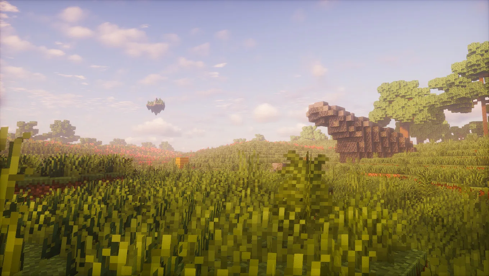
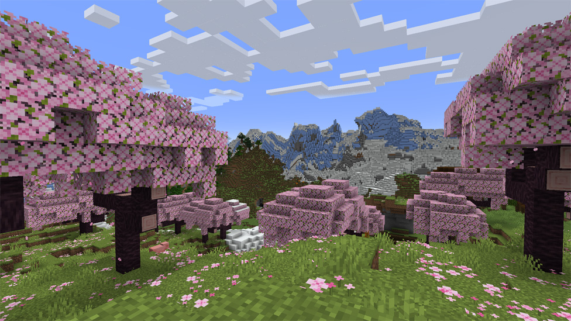

Exploring the World of Minecraft
October 7, 2026 by Ramone Watson

Minecraft is a sandbox game that allows players
to explore, build, and survive in a world made
entirely of blocks. Players can discover caves,
explore villages, collect resources, and create
structures using their imagination. Every world
offers new opportunities to experience different
adventures and challenges.
One of my favourite things about Minecraft is
the freedom it gives players. You can build
houses, farms, castles, and even entire cities.
Players can also explore dangerous locations,
collect valuable materials, and discover new
environments. Whether playing alone or with
friends, there is always something interesting
to do in Minecraft.
Surviving Your First Night in Minecraft
October 7, 2026 by Ramone Watson

Surviving the first night in Minecraft can be
challenging for beginners. When the sun sets,
dangerous creatures such as zombies, skeletons,
and spiders begin appearing. Players must
prepare themselves by gathering resources
and building a safe shelter before nightfall.
Without proper preparation, surviving the
night can become very difficult.
The best way to survive is to collect wood,
craft basic tools, and build a small house
before the sun goes down. Gathering food
and creating torches will also help players
stay safe. Once the first night is over,
players can begin exploring caves, mining
valuable resources, and improving their
equipment for future adventures.